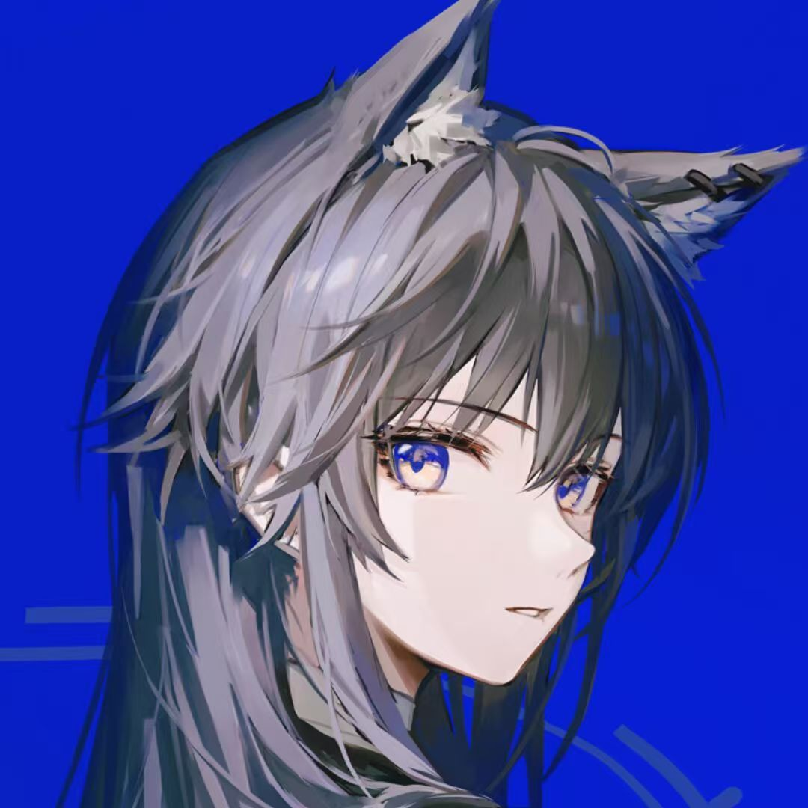

谭意青, 现北京理工大学大二学生, 兴趣爱好广泛, 乐于与他人交流.
兴趣爱好具体包括游戏, 阅读, 代码, 运动, 音乐等.
Contact: QQ 邮箱
爱好广泛, 主要包括集换式卡牌游戏(TCG), 二次元游戏, 独立游戏.
兴趣广泛, 对国内外经典小说都有涉猎. 但最近有点忙读的比较少.
参与过 OI 与 ACM. 擅长 C++ 语言. 对 rust, js, python 等语言也有所涉猎.
喜欢算法.
喜欢单车骑行(但是还没有买车), 羽毛球(欢迎来约).
喜欢的包括但不限于 chilichill, 一些 99 组的音乐, 五月天, 中岛美雪, 明日方舟的一些歌, STARSET, 一些二次元作品的配乐.